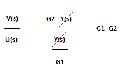

Características
- En un sistema de control en lazo abierto la salida del sistema no tiene efecto sobre la señal de entrada.
- No se compara la salida del sistema con el valor deseado de la salida del sistema (referencia).
- Para cada entrada de referencia le corresponde una condición de operación fijada.
- La exactitud de la salida del sistema depende de la calibración del controlador.
- En presencia de perturbaciones estos sistemas de control no cumplen su función adecuadamente.
- Los sistemas en lazo abierto tienen la ventaja de ser bastante sencillos y en consecuencia de bajo costo, y con buena confiabilidad. Sin embargo, con frecuencia son inexactos, porque no hay corrección de errores.
El control en lazo abierto suele aparecer en dispositivos con control secuencial, en el que no hay una regulación de variables sino que se realizan una serie de operaciones de manera determinada. Esa secuencia de operaciones puede venir impuesta por eventos (event-driven) o por tiempo (time-driven). Se programa utilizando PLC (Controlador Lógico Programable).

Elementos de un sistema de control en lazo abierto
Se puede considerar que un sistema en lazo abierto consiste en algunos subsistemas básicos arreglados como se muestra en la figura. Estos elementos pueden ser distintos equipos separados, pero todas las funciones que cumple cada subsistema se deben preservar. La entrada global al sistema es una señal, que, basada en experiencias anteriores, es probable que conduzca a la salida requerida.

Señal de referencia o consigna: Es una señal externa de control con la cual imponemos el valor deseado en la señal de salida. Un ejemplo de generador de referencia es el selector de temperatura en el control de temperatura de una nevera. La señal de referencia es una posición de la perilla, que está directamente relacionada con la variable de salida que es la temperatura.
Elemento de control: Este elemento determina qué acción se va a tomar dada una entrada al sistema de control.
Elemento de corrección: Este elemento responde a la entrada que viene del elemento de control e inicia la acción para producir el cambio en la variable controlada al valor requerido.
Planta: El proceso o planta es el sistema en el que se va a controlar la variable.
Perturbaciones: se producen de forma imprevista y provocan una desviación de la señal real respecto de la señal deseada. Pueden ser internas, que dependen del propio sistema como puede ser el envejecimiento de componentes, o externas como, por ejemplo, la apertura de una ventana en un recinto que se está climatizando.
Señal de salida o respuesta: Es el valor real en cada instante que toma la señal que pretendemos controlar.
Un ejemplo de un sistema en lazo abierto es un calefactor eléctrico utilizado para calentar una habitación. Con dicho sistema se tiene:
Variable controlada: temperatura de la habitación
Elemento de control: una persona que toma las decisiones basadas en la experiencia de las temperaturas producidas mediante la conmutación del elemento calefactor.
Elemento de corrección: el interruptor y el elemento calefactor.
Proceso: la habitación
Estrategias de control en lazo abierto
Con sistemas de control en lazo abierto los tipos de control más probables son el de dos posiciones (encendido-apagado o mejor conocido como on-off) o secuencias o acciones conmutadas por tiempo. Un ejemplo del control on-off es una persona que enciende un calefactor eléctrico para obtener la temperatura requerida en una habitación. Un ejemplo de una secuencia conmutada por tiempo es la operación de la lavadora de ropa doméstica.
Modo de control de dos posiciones
MODELOS MATEMATICOS DE LOS SISTEMAS DE CONTROL
Con la finalidad de entender el comportamiento de los sistemas es necesario obtener modelos matemáticos que los representan. El modelo de un barco es una réplica a escala de un barco de tamaño natural. En este modelo los tamaños relativos de las diferentes partes guardan las mismas proporciones que en el barco de tamaño natural, es decir, hay un escalamiento constante hacia abajo de los tamaños.
Una fotografía se puede considerar un modelo de la escena que se fotografió. Un modelo matemático de un sistema es una "réplica" de las relaciones entre entrada y salida o entre entradas y salidas. Las relaciones reales entre la entrada y la salida de un sistema se sustituyen por expresiones matemáticas.
Considere un motor como sistema. La entrada al motor es un voltaje V y la salida es una velocidad angular ω del eje. Para muchos sistemas existen relaciones lineales razonables entre la entrada y la salida. Esto significa que la salida es proporcional a la entrada y si la entrada se duplica, entonces la salida también se duplica, es decir, si la entrada se multiplica por una constante entonces la salida se multiplica por la misma constante. Esto también quiere decir que si la entrada 1 produce una salida 1 y la entrada 2 produce una salida 2, entonces una entrada igual a la suma de las entradas 1 y 2 producirá una salida igual a la suma de las salidas 1 y 2. De este modo, si existe una relación lineal entre la salida y la entrada para el motor, entonces el modelo matemático es:
ω = GV
donde G es la constante de proporcionalidad. Esta relación implica que si el voltaje cambia, entonces deberá haber un cambio inmediato correspondiente en la velocidad angular del eje. Éste no será el caso, puesto que el motor toma un tiempo para que el eje cambie a la nueva velocidad. Así la relación existe, sólo entre el voltaje y la velocidad cuando el sistema ha tenido suficiente tiempo para asentarse ante cualquier cambio en la entrada, es decir, esto se refiere a lo que se denomina condición estado estable. Entonces, para aclarar, la ecuación se puede escribir como:
Valor en estado estable de ω: G(Valor en estado estable de)
Por lo tanto:

La constante G se denomina función de transferencia o ganancia del sistema. En general, se puede definir la función de transferencia como el cociente de la salida en estado estable entre la entrada en estado estable para un sistema o subsistema.
Por ejemplo, al insertar una moneda en una máquina de barras de chocolate se obtiene la salida de una barra de chocolate. La función de transferencia, para el estado estable, es 1 barra/moneda. Sí se supone que el sistema es lineal, para una entrada de dos monedas se obtendrían dos barras de chocolate.
Un sistema de medición de temperatura puede tener una entrada de 10 °C y producir una salida en estado estable de 5.0 mV. Este sistema tiene una función de transferencia de 0.5 mV/°C. Si se supone que el sistema es lineal se puede predecir que si la entrada fuera de 20 °C entonces la salida en estado estable sería 10.0 mV. El modelo matemático del sistema es:

Lo anterior es el análisis de un sistema que tiene una relación lineal entre la entrada y la salida. Sin embargo, los sistemas reales pueden exhibir un comportamiento no lineal. En muchos casos tales sistemas son lineales si las señales de entrada se mantienen dentro de ciertos límites. Para la máquina de barras de chocolate el sistema es lineal siempre que no se inserta un mayor número de monedas que las barras de chocolate que tiene la máquina. Un amplificador puede ser lineal sólo para señales de entrada hasta cierta magnitud.
Ejemplo
Un motor tiene una función de transferencia de 500 rev/min por volt. ¿Cuál será la velocidad de salida en estado estable para tal motor cuando la entrada es 12 V?
Respuesta
Si se utiliza la ecuación

Entonces,

Existen muchas situaciones donde se requiere la función de transferencia para varios elementos en serie. Considere dos elementos en serie como se muestra en la figura.

Los dos elementos pueden ser un sistema en lazo abierto puesto que no hay lazo de realimentación, o sólo dos elementos en serie de un sistema más grande.
Para el elemento 1 la función de transferencia G1, es la salida Y(s) dividida entre la entrada U(s). Así,

Para el elemento 2 la función de transferencia G2 es la salida V(s)dividida entre la entrada Y(s). Es decir,

La función de transferencia global del sistema es la salida V(s)dividida entre la entrada U(s). Pero esto se puede escribir como

Por lo tanto, para el sistema en lazo abierto

La función de transferencia global en lazo abierto es el producto de las funciones de transferencia de los elementos individuales. Esto se aplica a cualquier número de elementos conectados en serie.
Ejemplo
El sistema de medición empleado en un sistema de control consta de dos elementos, un sensor y un acondicionador de señal en serie. Si el sensor tiene una función de transferencia de 0.1 mA/Pa y el acondicionador de señal una función de transferencia de 20, ¿cuál es la función de transferencia del sistema de medición?

Respuesta
El sensor y el acondicionador de señal están en serie, de modo que la función de transferencia combinada es el producto de las funciones de transferencia de los elementos individuales.

Error en estado estable
El error en estado estable E de un sistema es la diferencia entre la salida del sistema y su entrada cuando las condiciones están en estado estable.

Puesto que para un sistema con una función de transferencia global G(s)

Entonces,

Para un sistema en lazo abierto con múltiples elementos en serie, el error en estado estable se puede escribir como:

donde G1, G2 y G3 son las funciones de transferencia de los elementos en el sistema.
Para que el error sea cero, G1 G2 G3 deben ser igual a 1. Aunque esto se puede lograr en la preparación o calibración del sistema, es inevitable que se presenten errores en estado estable debido a que las funciones de transferencia cambian como consecuencia de cambios en el entorno del sistema.
Ejemplo 1:
La siguiente figura muestra un controlador con una función de transferencia de 12 y un motor con una función de transferencia de 0.10 rev/min por V.

¿Cuál será el error en estado estable cuando el sistema es un sistema de control en lazo abierto y cómo cambiará el error si, debido a cambios ambientales, la función de transferencia del motor cambia en 10%?
Respuesta:
Antes de que se presente cualquier cambio, el error E, es:

Si hay un cambio de 10% en la función de transferencia del motor, es decir, 0.11 rev/min por V, entonces

El error se ha incrementado en un factor de 1,6.
Efecto de las perturbaciones y estabilidad en el modelamiento de un sistema
Una consideración importante con un sistema de control es el efecto de cualquier perturbación. De esta manera, en un sistema de calefacción central doméstico con un sistema de control en lazo abierto involucrado, el calefactor se enciende para obtener la temperatura requerida en la habitación, ¿qué ocurrirá si alguien abre la ventana y permite que el aire frío entre en la habitación? Tal perturbación se puede incorporar en el diagrama de bloques del sistema de la forma que muestra la siguiente figura. En este caso, la perturbación P(s)se suma a la salida del proceso. Para tal situación se tiene:

El término P(s)es el error en estado estable adicionado al sistema por la presencia de la perturbación.
Si la perturbación se adiciona al sistema entre los elementos 1 y 2 (como ilustra la siguiente figura, entonces:

El término G2xP(s)es el error en estado estable adicionado al sistema por la presencia de la perturbación.
Actividad
Calcular el error en estado estable para los siguientes sistemas de control en lazo abierto con perturbaciones:


Sensibilidad a cambios en los componentes
Con un sistema en lazo abierto la función de transferencia global está dada por la ecuación:

dondeG1, G2 y G3 son las funciones de transferencia de los elementos en el sistema.
Los cambios en las características de estos elementos con el tiempo y las condiciones ambientales pueden resultar en un cambio en la función de transferencia.
Así, por ejemplo, si un elemento es un motor, el incremento de la fricción en los rodamientos resultaría en un decremento en la función de transferencia del motor. Un cambio en la función de transferencia del elemento 1 de

significa un cambio en la función de transferencia global para el sistema en lazo abierto de:

Estabilidad de los sistemas de control
En términos mecánicos se dice que un sistema está en equilibrio estable, si cuando se le da un empujón, éste regresa a su posición original cuando se deja de empujar. Un ejemplo de esta situación es una bola en reposo sobre un plato esférico. Cuando la bola se empuja, ésta se mueve hacia un lado del plato, pero cuando se deja de empujar, regresa pronto a su posición de reposo al centro del plato. Sin embargo, la posición sería inestable si la bola estuviera en reposo sobre la parte exterior del plato si éste se voltea, cualquier ligero empujón causa que la bola ruede y no regrese a su posición original cuando se deja de empujar.
a) Estable, b) inestable

En general, se dice que un sistema es estable si cuando está sujeto a una entrada o perturbación acotada entonces la salida es acotada. Una entrada o salida acotada es la que tiene una magnitud finita. Así, en el caso de la bola, la entrada es al inicio cero, seguido de un empujón que no continúa en forma indefinida sino que cesa después de un tiempo. La salida en la condición estable es tal que el empujón causa el movimiento de la bola y que se desplace de su posición de reposo, pero eventualmente el movimiento de la bola cesa y el desplazamiento no continúa incrementándose o cambiando.
En la condición inestable, el desplazamiento de la salida se va incrementando, es decir, una entrada de magnitud finita puede producir una salida que crece sin límite.
La condición para estabilidad también se puede expresar como que un sistema es estable si al aplicarle un impulso la salida regresa eventualmente a cero.
Los sistemas de control en lazo abierto son inherentemente estables. Una entrada finita produce una salida finita y que en forma indefinida no cambia con el tiempo. Al incrementar la función de transferencia de un elemento en tales sistemas no tiene efecto en la estabilidad del propio sistema. Así, para un sistema en lazo abierto denominado horno microondas, el programar y activar el temporizador para calentar un alimento durante 2 minutos dará como resultado un conteo de 120 segundos, no continuará contando de manera indefinida. Al cambiar el tipo de alimento, éste no tiene efecto sobre la estabilidad del sistema.
No obstante, los sistemas en lazo abierto pueden mostrar inestabilidad, que se puede presentar como resultado de tiempos de retardo que ocurren entre el cambio en la variable y la señal de realimentación que resulta de la respuesta del sistema. Un ejemplo de inestabilidad se puede presentar cuando una persona para utilizar la ducha ajusta en forma manual la temperatura del agua mediante una llave mezcladora, la cual permite determinar las cantidades relativas de agua caliente y fría. Suponga que al principio el agua está muy fría. Entonces decide incrementar el elemento agua caliente.
Sin embargo, existe un tiempo de retardo antes de que el agua caliente alcance la salida de la regadera. De este modo, si la persona no espera y sólo responde a la temperatura del agua, continuará incrementando el elemento agua caliente. El resultado será que cuando el agua muy caliente alcance la salida de la regadera se calentará muy rápido. La persona entonces incrementa el elemento agua fría. Una vez más, debido al tiempo de retardo que transcurre antes de que el agua se enfríe a la salida de la regadera, la persona continuará incrementando el elemento agua fría.
El resultado será que cuando el agua fría alcance la salida de la regadera se enfriará muy rápido. Así, el ciclo se repite con el resultado de que la temperatura del agua en la salida de la regadera oscilará ampliamente.
SISTEMAS DE CONTROL EN LAZO CERRADO
Con un sistema de control en lazo cerrado se tiene una señal de realimentación hacia la entrada desde la salida, la cual se utiliza para modificar la entrada de modo que la salida se mantenga constante a pesar de los cambios en las condiciones de operación. El sistema de calefacción con el calefactor eléctrico se puede transformar en un sistema en lazo cerrado si alguien con un termómetro monitorea la temperatura en la habitación y enciende o apaga los elementos calefactores de 1 kW o 2 kW para mantener la temperatura de la habitación constante. En esta situación existe la realimentación de una señal a la entrada referente a la temperatura, con lo que la entrada al sistema se ajusta según si su salida es la temperatura requerida. Así, la entrada al calefactor depende de la desviación de la temperatura real con la temperatura requerida.

Para ilustrar las diferencias adicionales entre los sistemas en lazo abierto y en lazo cerrado, considere un motor. Con un sistema en lazo abierto, la velocidad angular en el eje del motor se podría determinar sólo por la posición inicial de la perilla de selección de velocidad, que afecta al voltaje aplicado al motor. Aquí no se compensan los cambios en el voltaje de alimentación, ni en las características del motor debidas a variaciones en la temperatura o los cambios de velocidad en el eje debidos a variación de carga mecánica, ya que no existe lazo de realimentación. Por otro lado, en un sistema en lazo cerrado la posición inicial de la perilla de control tiene una velocidad específica del eje y ésta se mantiene mediante realimentación, a pesar de los cambios en el voltaje de alimentación, las características de motor o de la carga. En un sistema de control en lazo abierto la salida del sistema no tiene efecto sobre la señal de entrada. En un sistema de control en lazo cerrado la salida sí tiene un efecto sobre la señal de entrada, y la modifica para mantener una señal de salida en el valor requerido.
Los sistemas en lazo cerrado tienen la ventaja de ser capaces de igualar los valores reales a los requeridos. No obstante, si existen retrasos en el sistema pueden surgir problemas. Dichos retrasos propician que la acción correctiva requerida llegue demasiado tarde, y como consecuencia, se obtienen oscilaciones en la entrada e inestabilidad (como se verá más adelante). Los sistemas en lazo cerrado son más complicados que aquellos en lazo abierto y más costosos con una gran posibilidad de descomposturas debidas a la gran cantidad de componentes. Más adelante se estudian las ventajas de los sistemas en lazo cerrado respecto a la minimización de los efectos de cambios en las relaciones entrada-salida de los elementos del sistema como resultado de los cambios en el medio y los efectos delas perturbaciones sobre el sistema.
Características
Las ventajas de tener una trayectoria de realimentación y, por lo tanto, un sistema en lazo cerrado en lugar de un sistema en lazo abierto se pueden resumir de la manera siguiente:
1. Más exacto en la igualación de los valores real y requerido para la variable.
2. Menos sensible a las perturbaciones.
3. Menos sensible a cambios en las características de los componentes.
4. La velocidad de respuesta se incrementa y, por lo tanto, el ancho de banda es mayor, es decir, el intervalo de frecuencias en los que el sistema responderá.
Pero hay algunas desventajas:
1. Hay una pérdida en la ganancia en cuanto a que la función de transferencia de un sistema en lazo abierto, se reduce de G a G/(1 +GH) por una trayectoria de realimentación con una función de transferencia H.
2. Existe una gran posibilidad de inestabilidad.
3. El sistema es más complejo y, por lo tanto, no sólo más caro, sino más propenso a descomposturas.
Elementos de un sistema de control en lazo cerrado
Se puede considerar que un sistema en lazo cerrado consiste en algunos subsistemas básicos ordenados como muestra la figura:

Estos elementos pueden ser partes distintas o equipos separados, pero todas las funciones de los subsistemas estarán presentes. La entrada global al sistema de control es el valor requerido de la variable y la salida es el valor real de la variable.
Señal de referencia o consigna: Es una señal externa de control con la cual imponemos el valor deseado en la señal de salida. Un ejemplo de generador de referencia es el selector de temperatura en el control de temperatura de una nevera. La señal de referencia es una posición de la perilla, que está directamente relacionada con la variable de salida que es la temperatura.
Elemento de comparación: Este elemento compara el valor requerido o de referencia de la variable por controlar con el valor medido de lo que se obtiene a la salida, y produce una señal de error la cual indica la diferencia del valor obtenido a la salida y el valor requerido:
Señal de error = señal del valor de referencia- señal del valor medido
Elemento de control: Este elemento determina qué acción se va a tomar dada una entrada al sistema de control y decide qué acción tomar cuando se recibe una señal de error. A menudo se utiliza el término controladorpara un elemento que incorpora el elemento de control y la unidad de corrección
Elemento de corrección: Este elemento responde a la entrada que viene del elemento de control e inicia la acción para producir el cambio en la variable controlada al valor requerido.
Planta: El proceso o planta es el sistema en el que se va a controlar la variable.
Perturbaciones: se producen de forma imprevista y provocan una desviación de la señal real respecto de la señal deseada. Pueden ser internas, que dependen del propio sistema como puede ser el envejecimiento de componentes, o externas como, por ejemplo, la apertura de una ventana en un recinto que se está climatizando.
Señal de salida o respuesta: Es el valor real en cada instante que toma la señal que pretendemos controlar.
Elemento de medición: Este elemento produce una señal relacionada con la condición de la variable controlada, y proporciona la señal de realimentación al elemento de comparación para determinar si hay o no error.
Una característica necesaria de un sistema de control en lazo cerrado es el lazo de realimentación. Este es el medio a través del cual una señal relacionada con la variable real obtenida se realimenta para compararse con la señal de referencia. Se dice que se tiene realimentación negativa cuando la señal realimentada se sustrae del valor de referencia, esto es,
Señal de error = valor de referencia - señal de realimentación
La realimentación negativa es necesaria para que logre el control. La realimentación positiva se presenta cuando la señal realimentada se adiciona al valor de referencia, esto es,
Señal de error = valor de referencia + señal de realimentación
En la figura la señal de realimentación se combina con el valor de referencia en el elemento de comparación. El elemento de comparación se indica mediante un círculo con una cruz, éste es el símbolo genérico para indicar un elemento de suma. Cuando en el elemento de comparación hay realimentación negativa, el valor de referencia se marca como una señal positiva y la señal de realimentación como negativa de modo que la salida del elemento de comparación es la diferencia entre las señales. Si hubiera realimentación positiva en el elemento de suma, entonces ambas señales deben marcarse como positivas.
Para ilustrar esta presentación de los elementos de un sistema de control, considere el sistema de control estudiado al principio con la, donde se controló la temperatura de una habitación mediante una persona que encendía y apagaba el elemento calefactor de acuerdo a si la temperatura de la habitación dada por un termómetro tenía o no el valor requerido figura 2.5. Los elementos de este sistema de control son:
Variable controlada - temperatura de la habitación
Valor de referencia - temperatura requerida en la habitación
Elemento de comparación - persona que compara el valor medido y la
temperatura requerida
Señal de error - diferencia entre la temperatura requerida y la
medida
Elemento de control - la persona
Elemento de corrección - mano que opera el encendido del elemento calefactor
Proceso - habitación
Dispositivo de medición - termómetro
Realimentación – negativa
Estrategias de control en lazo cerrado
Con sistemas de control en lazo cerrado los tipos de control son a menudo el control de dos posiciones, el control proporcional o el control proporcional combinado con algún otro refinamiento. Con el modo de control de dos posiciones, la señal de error de entrada al elemento de control es una salida de encendido o de apagado, que se utiliza para encender o apagar al elemento de corrección. Así, en el caso del sistema de calefacción central doméstico controlado por un termostato, éste produce una salida que enciende o apaga el calefactor según el error. Si la temperatura de la habitación baja de cierto valor, entonces el termostato enciende el calefactor; si por el contrario, la temperatura rebasa el valor fijado, el calefactor se apaga.
Con el control proporcional la salida del elemento de control es una señal, la cual es proporcional al error: cuanto mayor sea el error mayor será la salida. Esto significa que el elemento de corrección recibirá una señal que depende de la magnitud de la corrección que se necesite. En la figura 3.3 se muestra un ejemplo de tal sistema de control para mantener constante el nivel de un líquido. Los cambios en el nivel producen un movimiento del flotador y, por lo tanto del brazo móvil que lo sostiene. A su vez, esto cambia la apertura de la válvula y afecta la tasa a la que el líquido sale del tanque. Cuanto mayor sea el error en el nivel del líquido mayor será el cambio en la apertura de la válvula. Debido a que el control proporcional por sí solo puede presentar algunos problemas, con frecuencia se combina con otras formas de control. Existe el control derivativo, donde la salida es proporcional a la razón de cambio de la señal de error, y el control integral, donde la salida en el tiempo / es proporcional a la integral de la señal de error entre t = 0 y t. Un ejemplo sencillo del control proporcional derivativo es un vehículo automático donde el controlador toma acciones basadas no sólo en el conocimiento de la posición del vehículo, sino también de su velocidad, es decir, la razón de cambio de la distancia. Con sólo el control proporcional, el controlador da nada más una respuesta en proporción a la magnitud del error de la posición requerida.
No toma en cuenta la rapidez del cambio del error. El control derivativo sí lo hace. Así, si el vehículo se empieza a mover alejándose rápido de la trayectoria requerida, con el control derivativo habrá una acción correctiva mucho mayor que si el vehículo se alejara lentamente de la trayectoria requerida. De este modo, la combinación del control proporcional derivativo toma en cuenta más rápido las desviaciones de la trayectoria requerida y las corrige.